Une idée particulière, pas la première.
Pour mon TFA de cette année je suis passée par pas mal d’idée différente, j’en avais gardé 3 principales :
Et si les maisons automatiques devenaient incontrôlables?
Les objets connectés pourraient agir seuls sans notre contrôle : lumières, chauffage ou appareils qui s’activent au mauvais moment et perturbent notre quotidien.
Pourquoi je ne l'ai pas gardé?
L’idée était pas mal en tant que tel mais, au final je ne voyais pas où je pouvais aller avec ce genre de concept sachant que j’aime faire des site explicatif ou dénonciateur plutôt que visuel ou interactif.
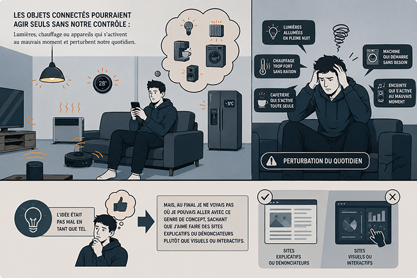
Et si les romans utilisaient l’ia pour générer des images ?
Une liseuse spéciale pourrait créer automatiquement des images et des ambiances selon l’histoire afin de rendre la lecture plus immersive.
Pourquoi je ne l'ai pas gardé?
Cette idée là a été rejetée car trop “futuriste dans l’ensemble” et on sait aussi qu'aujourd'hui l’ia n’est pas fort apprécié dans notre société car risque que le travail manque d'âme dans l’ensemble. Donc j’ai préféré m’éloigner des concepts touchant de près ou de loin a de l’ia.
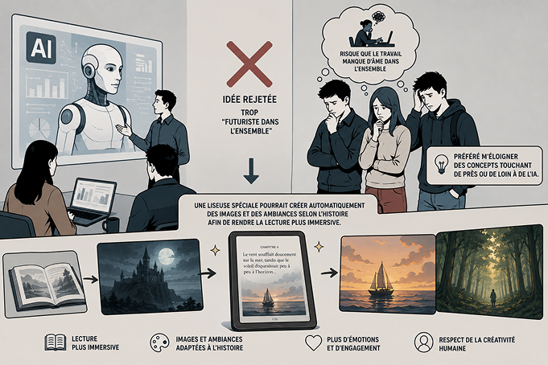
Et si Google maps ajoutait une fonction de rencontre
Les utilisateurs pourraient rencontrer des personnes proches d’eux et trouver facilement un point de rendez-vous adapté au trajet de chacun.
Pourquoi je l'ai gardé
Je voulais un sujet assez tape à l'œil et qui pouvait proposer un problème d'éthique mais qui rentrerait dans les codes d’aujourd’hui sur l’hyper surveillance de nos données et de notre enfermement social via nos smartphones.
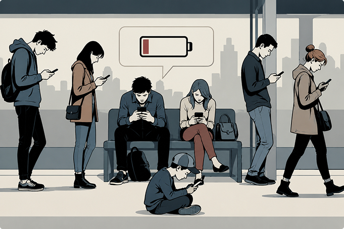
Ensuite?
J’ai modifié légèrement le concept pour le faire entrer dans une dimension où l'on accuserait cette idée plutôt que de la mettre en valeur en dénonçant ce qui ne va pas. Je voulais me rapprocher de ce qu' on peut ressentir en regardant un épisode de black mirror mais sous forme de lecture à travers un site web.
Mon idée est inspirée du concept d’un des épisodes de cette série, même si à la base je n’avais pas conscience que je m’en inspirer sur l’idée originale de mon projet.
Dans cet épisode les êtres humains sont notés en étoiles et sont privés de certaines activités en fonction du nombre d’étoiles possédé. Et l’on suit la vie d’une des personnes qui passe de pas mal d’étoiles a très peux due à des circonstances mal chanceuse. J’ai voulu retranscrire ça dans mon projet, une des rubrique en parle de ce problème la de la perte d’étoile et de popularité pour parfois des raisons non justifiées.
Voila pour la partie réflexion, en avant maintenant pour la partie rédaction et design qui fut semé de pas mal d’embuche.
Pas une version mais trois
J’avais enfin mon idée de base
C'est après quelques jours de peaufinage sur le concept à proprement parler. Le souci se passa dans la suite du travail, je n'étais pas satisfait de mes premières versions au niveau du texte et ensuite du design ce qui fait que j’avais recommencé une deuxième fois l'entièreté de mon texte.
Plus tard un professeur m’a recommandé de recommencer encore 2 fois mon projet pour le mieux car aujourd’hui j’en suis + que satisfait du résultat final.
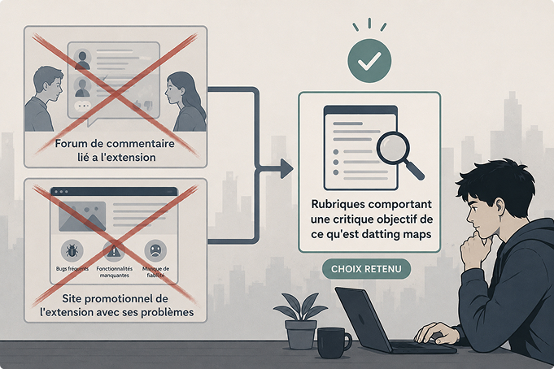
Pour le design j’en ai fait 3 versions ( oui j’en ai bavé ) la première version était en lien avec ma deuxième version de mon texte et ainsi de suite jusqu'à la V3 de mon design qui est l’actuel.
Une fois lancé pour de bon, tout s’est enfin accéléré et j’ai pu le finir en 2-3 jours ce qui a rattrapé le retard accumulé lors de mes nouvelles tentatives.
Voici mes anciens designs qui n’ont pas été retenu dans la version finale de mon projet.
Evolution section "explication"
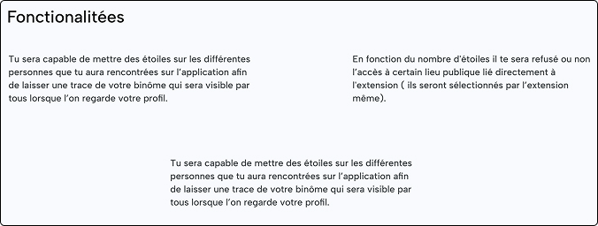
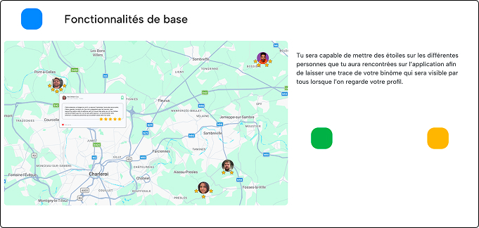
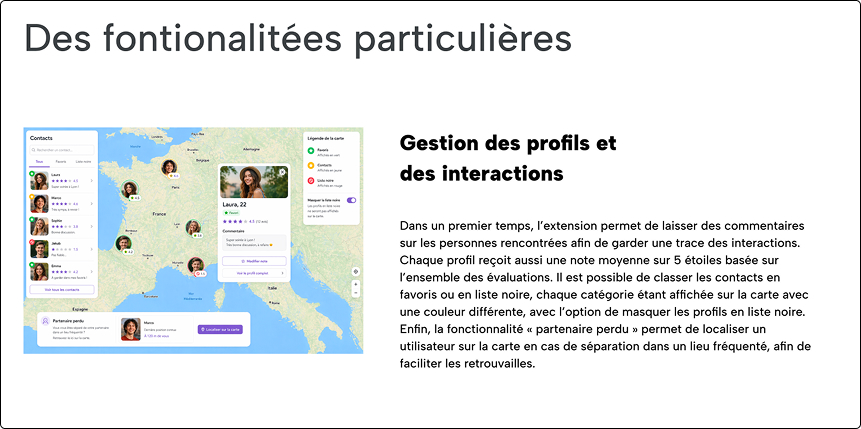
Evolution section "commentaire"
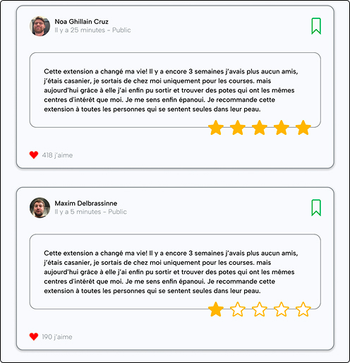
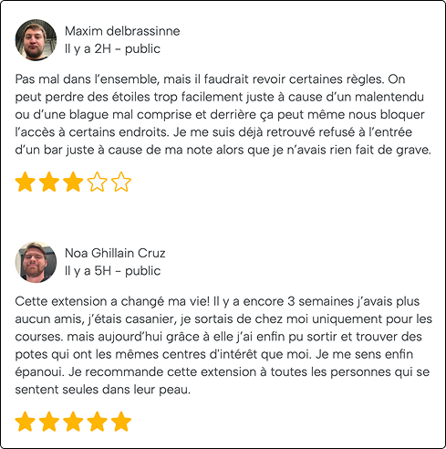
Après le design viens le code
Pour en finir avec ce case study
Je voulais revenir vite fait sur le code qui s’est bien passé dans l’ensemble du temps a part quelques petits bugs comme celui ci dessous qui a été réglé avec le temps le soucis était simplement une faute d'orthographe dans le nom d’une de mes classe, une majuscule avait été ajouté par erreur. Plus de peur que de mal.
Avec la suite du code j’ai décidé de retirer les boutons qui aurait donné droit à des carrousel dans mes pages pour me focaliser sur une expérience plus linéaire qui s'effectue juste au scroll en misant sur des animations pour fluidifier la lecture et l’esthétique des visuels en javascript.
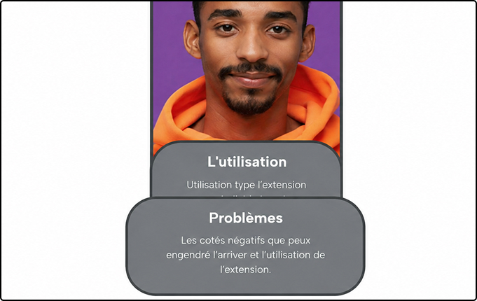
Pour finir tout s'est bien déroulé
j’ai pu terminer à temps le projets sans encombre. J’ai vraiment voulu en faire un sujet déstabilisant et d’un futur pas très recommandable, mais c’est voulu j’aime les sujets dystopique ca ouvre un champs des possibilité énorme en fonction de l’imagination.
J'espère que la lecture et la découverte de dating maps vous a plus et s’il vous plaît ne crée jamais une extension ou une app similaire.
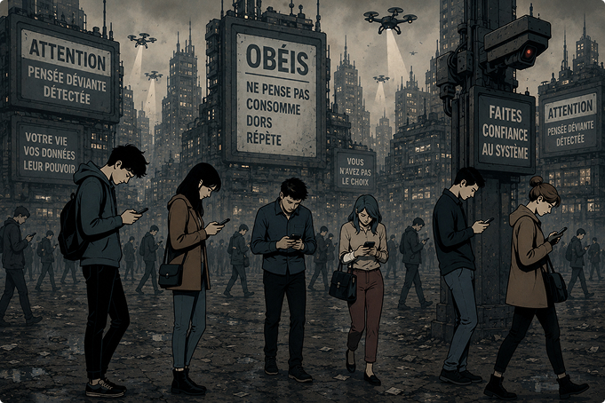
Merci d’avoir pris le temps pour ce projet qui me tient à coeur et dont je suis fier. A la prochaine.